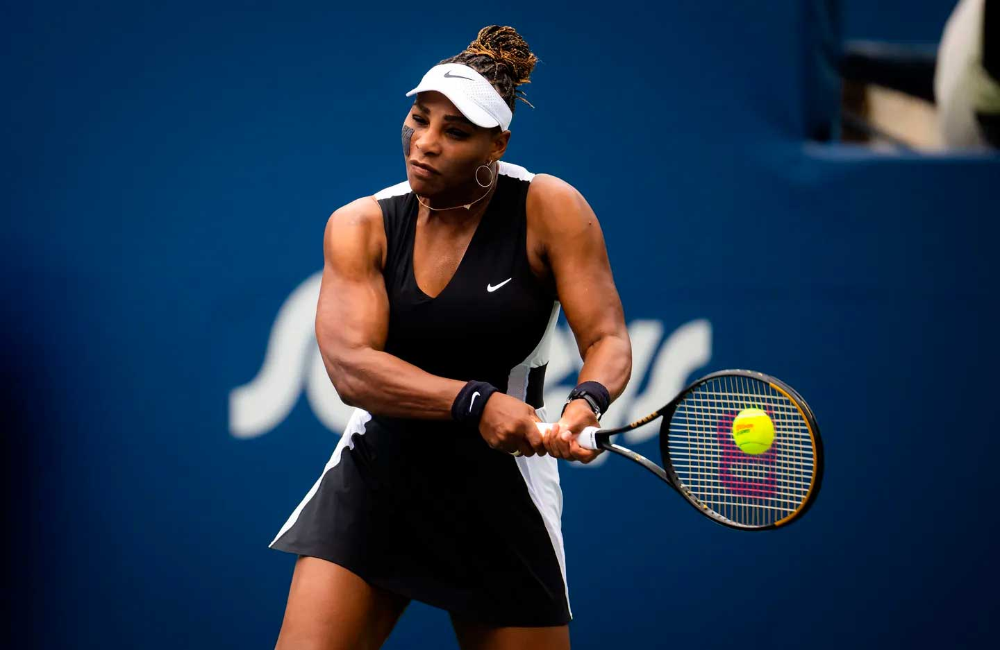
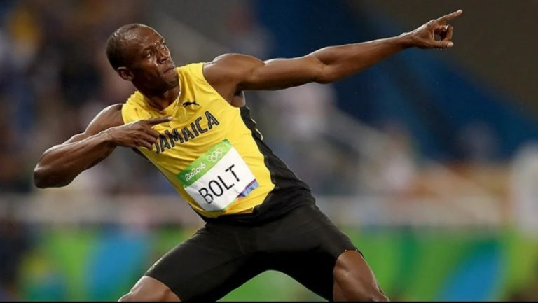

DEPORTES QUE ME HUBIERA GUSTADO PRACTICAR.
Golf: Los jugadores intentan golpear una pequeña bola con un
palo en una serie de hoyos en el menor número de golpes posible.
Hockey sobre hielo: Dos equipos compiten en una pista de hielo, tratando de marcar goles golpeando un disco
con un bastón y deslizándose sobre el hielo, mientras protegen su portería de los ataques del equipo contrario.
Esgrima: Se enfrentan dos competidores con armas blancas (espada, sable o florete),
buscando tocar al oponente mientras evitan ser tocados.
Escalada: Los escaladores suben paredes de roca, montañas o estructuras artificiales,
utilizando manos y pies para encontrar agarres y equilibrarse
Taekwondo: Arte marcial de origen coreano en el que los competidores utilizan
patadas y golpes de puño para marcar puntos al golpear zonas específicas del cuerpo del oponente
DEPORTISTAS QUE ADMIRO
 Cristiano Ronaldo:
Cristiano Ronaldo:
Cristiano Ronaldo - Fútbol: Considerado uno de los mejores futbolistas de todos los tiempos, ha jugado en equipos como el
Manchester United, Real Madrid y Juventus, además de ser capitán de la selección de Portugal
Jugadas humillantes de "CR7"
 Serena Williams:
Serena Williams - Tenis: Una de las tenistas más exitosas de la historia, ha ganado múltiples títulos de Grand Slam y
ha sido número 1 del mundo en varias ocasiones.
GRANDES JUGADAS!:
 Michael Phelps:
Michael Phelps:
Michael Phelps - Natación: El nadador más exitoso en la historia de los Juegos Olímpicos, ha ganado un total de 23
medallas de oro y 28 medallas en total en competencias olímpicas.
200 METROS!!...
 Usain Bolt:
Usain Bolt - Atletismo: Conocido como "el hombre más rápido del mundo", Bolt ha ganado múltiples medallas de oro en los Juegos Olímpicos y
ha establecido varios récords mundiales en carreras de velocidad.
EN 9 SEGUNDOS!!